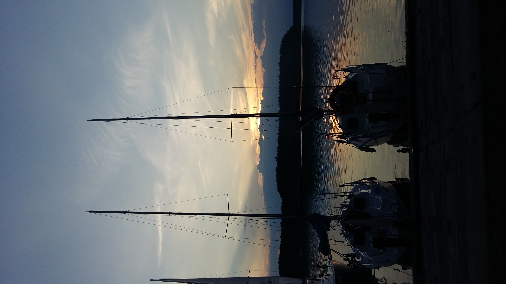

The Brda River is one of the most beautiful water routes both in Poland and Europe. It is a left-side tributary of the Vistula River. The river begins its journey on the hillsides of the Bytowskie Lakeland at 180 metres above sea level and flows into Smołowe Lake; the distance from there to its estuary equals to 239 kilometres. Due to a considerable difference in the altitude between its source and estuary to the Vistula River, the Brda River is rapid. The kayak route starts 5 km farther in Świeszyno on Pietrzykowskie Duże (Głębokie) Lake. The Brda River finishes its course in Bydgoszcz, flowing into the Vistula River in Brdyujście district. It comprises 43 direct tributaries and passes 19 lakes. The Brda River is suitable for kayaking over a distance of 233 kilometres; it takes kayakers 10 – 12 days to cover this distance, depending on how long and frequent stops they take. The Brda River is characterised by its diversity, its diverse and meandering course, numerous lakes, varied landscape, beautiful and wild nature, widespread forests, clean water and plenty of side routes. Those advantages have been attracting a great number of water tourists to the Brda River for years.
This long, easy to travel by kayak, and perfectly marked river has two great advantages – a great number of lakes on the route and boundless forests spreading along its entire course. All nature lovers should be delighted. The river bed is hard, covered with gravel, and poorly overgrown over long distances.
Most of the route is located in the buffer zone of the Bory Tucholskie National Park and within the area of the Zaborski and Tucholski Scenic Parks. The beauty and diversity of the wildlife parks located here should delight everyone. The extraordinary picturesqueness, the vast forests, the beautiful lakes, the diversified course of the river and its primeval nature are the greatest advantages of this water route considered as one of the most attractive kayak routes in Europe since the inter-war period. It was also one of the favourite routes of Pope John Paul II. The river, despite its rapid section, is an easy route that can be easily recommended to beginner kayakers or even to completely unexperienced kayakers who would like to go kayaking for the first time.
(Source: Przechlewo.pl)


A right-bank tributary of Noteċ, about 200km long with the river-basin area of 3200km². It begins near Połczyn Zdrój, and flows into Noteć south of Krzyż. Average drop of this river is 0,61 promille. The river’s name is old and mysterious. According to language scholars it dates back to the times of the Indo-European language community (from the stem “dreu” – “to hurry” or “to run”). One of the biggest tributaries of Danube carries the same name. At the level of Drawno, the average of 10m³ of water per second runs through Drawa. At the level of Kamienna – already as much as 15m³, and by the estuary to Noteć, in Drawiny – over 20m³. The average annual amplitude of water levels is about 40-50cm.
- Drawski Park Krajobrazowy
- Drawieński Park Narodowy
- Rezerwat - "Drawski Matecznik"
- Elektrownia wodna Kamienna
- Rokokowy pałac we wsi Drawsko
- Poligon wojskowy - zakaz wstępu
- Ruiny zamku z XIII wieku w Złocieńcu
- Prostynia - Rościn - 6km
- Rościn - Drawno - 10km
- Drawno - Barnimie - 11km
- Barnimie - Bogdanka - 10km
- Bogdanka - Pstrąg - 15km
- Pstrąg - Stare Osieczno - 11km
- Stare Osieczno - Przyborowo - 16km

Below you will find a route ideal for those who are not bothered by water in the canoe, are not afraid of rolling over and have already known how to fix a hole in their “ship”. Hold on tight – here’s Łupawa! This wild river reminds a mountain river with more rapids and obstacles than in a case of a peaceful current. If you manage to stop reading the water for a short while, you will notice beautiful high and steep hills as well as old backwoods covering the banks. It is worth visiting that place if you crave for many stories to tell after you come back...
The upper section of Łupawa runs through Lake Jasień which is interesting as far as landscape is concerned (it is the biggest lake of Słupia Valley Landscape Park). Further Łupawa, just like a mountain river, cuts an area of moraines and finally falls into the waters of Lake Gardno. The upper and middle section provide extraordinary attractions in a form of high steep hills situated near the water as well as old backwoods covering the banks of the river. One has to prepare well for facing that route bearing in mind that although the route itself is not long, sometimes even 4-6 days, which is a standard period for covering the route on Łupawa, are not enough.
As there are few people in surrounding area, the river offers first class of purity almost on the entire length. We are also not likely to meet many tourists here opposite to popular canoeing routes.
Canoeing down Łupawa is an option for those who crave for real adventure and dislike getting bored while paddling. Additional attraction of this route is the possibility of organizing a one day trip to Słowiński National Park and observing the panorama of the Baltic coast from the tops of the highest dunes, reaching 40 m. Remember that entering Lake Gardno requires the permission of the management of Słowiński National Park. As far as the lake itself is concerned its coastal location results here in high waves and one is forced to move against the wind which requires much strength and it is often dangerous.


My name is Tomasz.
I am passionate about kayaking, motorbike and motorcycle expeditions.
I belong to the group of Cracovian kayaking freaks and we have been organizing annual kayaking trips for over 20 years.
I was born and raised in Krakow and I spent my teenage years here.
I was educated in New York and London, where I lived for over 17 years in total.
Regarding new technologies, I was persuaded to learn coding by a friend of mine who once said that with my English and my persistence to achieve goals and enthusiasm, I can certainly manage.